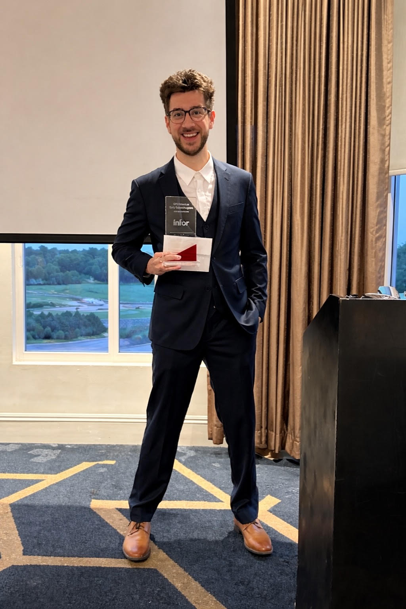
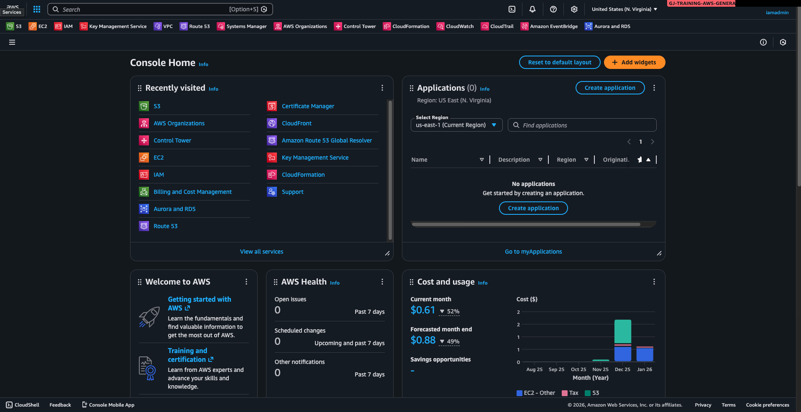

About
I’m a Data Consultant focused on enterprise system implementations where data architecture, system design, and operational reliability determine whether platforms succeed in production.
My work centers on the data layer of complex enterprise systems— ensuring migrations are executed correctly, data flows remain consistent across platforms, and systems launch with reliable foundations.
Through this work I’ve developed a deep understanding of how enterprise software moves from functional requirements into technical system design, and how disciplined data practices ultimately determine the success of large-scale implementations.
What I Do Today

In my current role I work on large enterprise platform implementations where accurate data and predictable system behavior are essential.
I design and execute data validation processes during system migrations, manage and cleanse large operational datasets, and ensure data flows reliably across systems supporting analytics, integrations, and core business operations.
This work involves close collaboration with engineers, architects, and business stakeholders to translate functional requirements into structured technical outcomes that allow systems to operate consistently once deployed.
A major part of my responsibility is ensuring implementations launch with trusted data—running structured QA cycles, resolving data inconsistencies, and strengthening data quality before go-live.
My Path
My career began in SaaS sales, where I gained firsthand insight into how organizations evaluate software platforms and how technology decisions are made across both technical and business leadership.
I later moved into functional consulting and delivery, working closely with implementation teams on system configuration, process alignment, testing cycles, and platform adoption.
That experience naturally led me into data management consulting, where I focus on the data structures and operational integrity that allow enterprise systems to function reliably.
Working across these roles has given me a full lifecycle perspective on enterprise technology—from platform evaluation through implementation and long-term operational use.
Technical Development

Alongside consulting work, I develop and deploy technical systems to expand my expertise in modern data infrastructure and cloud architecture.
This includes building full-stack applications, working with relational databases and API-driven services, and deploying projects on AWS cloud infrastructure.
These projects strengthen my understanding of how modern platforms are designed and how scalable data systems operate in production environments.
How I Work
I approach projects by aligning on objectives and system outcomes before moving into execution.
I’m comfortable operating between technical and business teams, clarifying requirements early and translating complexity into structured implementation plans.
My focus is delivering systems that function reliably in production— where data accuracy, operational stability, and user adoption are the measures that ultimately matter.
A Little More Human
Outside of work I enjoy travel, exploring new restaurants, and finding great coffee spots.
I spend time in the gym, work on side projects, and enjoy reading about science, history, and technology. I also value spending time with my girlfriend, family, and close friends.
Let’s Connect
If you want to see the projects and systems I’m working on, explore my portfolio.
If you'd like to connect or discuss opportunities, visit the contact page.